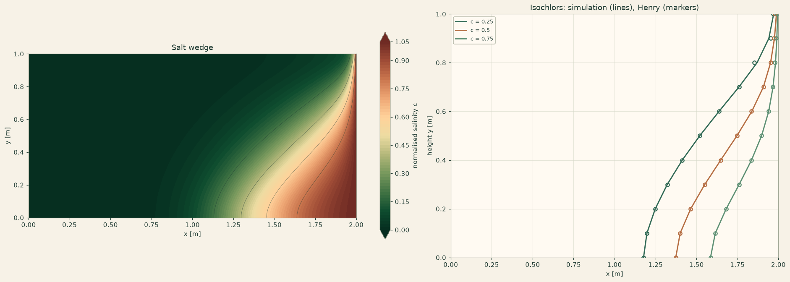
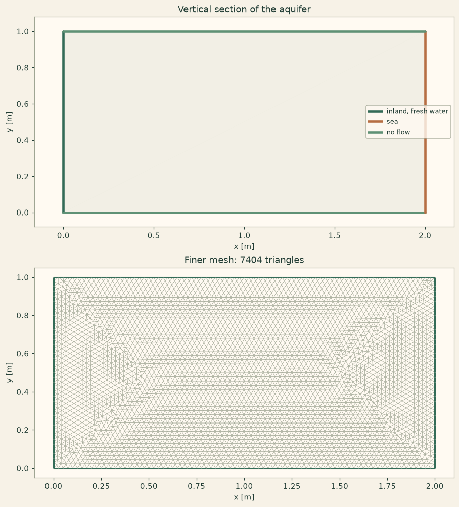

Docs › Examples › Seawater intrusion in a coastal aquifer
Porous media flow · 2D
Seawater intrusion in a coastal aquifer
Fresh groundwater flows to the sea through a confined aquifer while the denser seawater intrudes along its base as a salt wedge (Henry's problem).
Run locally with OneSimulation. The example downloads are free. Running them requires an activated runtime. Runtime Alpha 0.2.1a7 · CPython 3.13 on macOS (Apple Silicon), Ubuntu 22.04 (x86-64), and Windows x64. Installation and activation · View pilot plans. Scope of the reference checks.


What it computes
OneSimulation reads the aquifer from a STEP file, cuts it to its vertical section and couples stationary Darcy flow and salt transport both ways: the Darcy velocity carries the salt, the salt makes the water heavier through a density coupling; a relaxed fixed-point iteration solves both with quadratic triangles on two meshes. The script that builds the STEP file comes with the notebook.
What it checks
The isochlors 0.25, 0.5 and 0.75 lie at the base at 1.177, 1.374 and 1.586 m, equal to Henry's semi-analytical Fourier-Galerkin solution to 1 mm, and deviate from it by at most 16, 8 and 5 mm over the whole height.
Geometry
The notebook starts at the import of the CAD file seawater_intrusion_henry.step: STEP (AP242), readable by any CAD program, with the names of the faces that the boundary conditions use. Put it next to the notebook.


The geometry script
The script seawater_intrusion_henry_geometry.py builds the geometry with the CAD objects of OneSimulation and writes the file. Change a dimension there, run it, and run the notebook again.
"""Geometry of the OneSimulation example "Seawater intrusion in a coastal aquifer".
Builds the vertical section of the confined coastal aquifer of Henry's problem, 2 m long and
1 m deep, as a thin block with the CAD objects of OneSimulation and writes
seawater_intrusion_henry.step; the model lives on its section. The faces keep the names x_min
(inland boundary with the freshwater inflow), x_max (sea side), y_min (base) and y_max (top).
"""
from onesim.cad.d3 import Box
Box(length=2.0, width=1.0, height=0.1).save("seawater_intrusion_henry.step")The notebook
The complete notebook, cell by cell. Run it to produce the figures and the comparison printout.
Where an aquifer meets the sea, the heavier seawater sinks below the fresh groundwater and intrudes inland as a salt wedge; the fresh water flowing to the sea pushes it back. The balance decides how far a coastal well can pump before it draws salt. H.R. Henry's idealised problem of 1964 is the classical test of density-dependent groundwater models:
with the normalised salt concentration \(c\in[0,1]\) and the density contrast \(\varepsilon=0.025\) of seawater. Two numbers characterise it: \(a=Q/(K\varepsilon d)=0.263\), the freshwater inflow against the density-driven flow, and \(b=D/Q=0.1\), the dispersion.
Setup. An aquifer 2 m long and 1 m deep, freshwater inflow \(Q=6.6\cdot10^{-5}\) m²/s per metre of coast; water density 1000 kg/m³, viscosity 1 mPa s. The aquifer comes from the CAD file seawater_intrusion_henry.step, written by seawater_intrusion_henry_geometry.py with the CAD objects of OneSimulation; the model is its vertical section.
| side | flow | salt |
|---|---|---|
x_min (inland) | inflow \(Q/d\) | \(c=0\) |
x_max (sea) | hydrostatic seawater pressure | \(c=1\) |
y_min, y_max | no flow | no flux |
The pressure is the excess over the freshwater hydrostat, so the sea side carries \(\rho_0\varepsilon g(d-y)\).
Reference. Henry's semi-analytical Fourier-Galerkin solution (H.R. Henry, U.S. Geol. Surv. Water-Supply Paper 1613-C, 1964), here as the positions of the isochlors 0.25, 0.5 and 0.75 at eleven heights, recomputed with 14 × 14 Fourier modes for the variant with a uniform inland inflow (M.J. Simpson, T.P. Clement, Water Resour. Res. 40, 2004, W01504).
import numpy as np
from onesim.cad.exchange import load
from onesim.materials import ThermalFluid
from onesim.meshing import TriangularMesher
from onesim.numerics import Numerics
from onesim.numerics.coupled_systems import StationaryPartitionedCoupling
from onesim.numerics.fem import FiniteElement, Lagrange
from onesim.numerics.field_transfer import FieldInterpolation
from onesim.numerics.linear import SparseDirect
from onesim.numerics.nonlinear import FixedPoint
from onesim.physics.chemistry import (
FixedConcentration,
SpeciesFlux,
SpeciesTransport,
TransportSpecies,
)
from onesim.physics.hydrodynamics import (
DarcyFlow,
DarcyFluxBoundary,
DarcyPressureBoundary,
)
from onesim.simulation import Problem, Simulation
from onesim.simulation.field_connections import DensityBuoyancy, FieldCoupling
from onesim.simulation.initial_conditions import InitialValue
from onesim.visualization import plots, theme
theme.set()Geometry and mesh
section cuts the block at half thickness; the cut faces keep their names. Two triangle meshes, 5 cm and 2.5 cm.
block = load("seawater_intrusion_henry.step")
aquifer = block.section((0, 0, 1), origin=(0, 0, block.size[2] / 2))
side = aquifer.boundaries
length, depth = aquifer.size[:2]
sizes = [0.05, 0.025]
meshes = [TriangularMesher(target_size=size).generate(aquifer) for size in sizes]
fig = plots.figure(2, 1, size=(12, 9))
plots.geometry(
aquifer,
selection={
"inland, fresh water": side.x_min,
"sea": side.x_max,
"no flow": side.y_min | side.y_max,
},
labels=False,
title="Vertical section of the aquifer",
ax=fig[0],
)
plots.mesh(
meshes[-1],
groups=("all",),
legend=False,
title=f"Finer mesh: {meshes[-1].cell_count} triangles",
ax=fig[1],
)
plots.show()Model
Darcy flow and salt transport with quadratic elements. The salt makes the water heavier through DensityBuoyancy; the Darcy velocity carries the salt. A relaxed fixed-point iteration couples the two stationary problems.
a, b, inflow, rho0, viscosity, g, contrast = (
0.263,
0.1,
6.6e-5,
1000.0,
1e-3,
9.81,
0.025,
)
water = ThermalFluid(
density=rho0,
dynamic_viscosity=viscosity,
thermal_conductivity=0.6,
specific_heat_capacity=4180.0,
)
results = []
for mesh in meshes:
darcy = DarcyFlow(
domain=aquifer.domain(),
permeability=inflow / (a * contrast * depth) * viscosity / (rho0 * g),
material=water,
)
salt = SpeciesTransport(
domain=aquifer.domain(),
species=(TransportSpecies("salt", diffusivity=b * inflow),),
nonnegative=False,
)
problem = Problem(
name="Henry problem",
geometry=aquifer,
physics=(darcy, salt),
boundary_conditions=(
DarcyFluxBoundary(physics=darcy, boundary=side.x_min, flux=-inflow / depth),
DarcyPressureBoundary(
physics=darcy,
boundary=side.x_max,
value=lambda x, y: rho0 * contrast * g * (depth - y),
),
DarcyFluxBoundary(
physics=darcy, boundary=side.y_min | side.y_max, flux=0.0
),
FixedConcentration(physics=salt, boundary=side.x_min, value=0.0),
FixedConcentration(physics=salt, boundary=side.x_max, value=1.0),
SpeciesFlux(physics=salt, boundary=side.y_min | side.y_max, value=0.0),
),
initial_conditions=(InitialValue(salt.field("salt"), lambda x: x / length),),
couplings=(
FieldCoupling(
source=salt.field("salt"),
target=darcy.field("body_force"),
transfer=DensityBuoyancy(gravity=(0, -g), expansion=contrast),
),
FieldCoupling(
source=darcy.darcy_velocity,
target=salt.advecting_velocity,
transfer=FieldInterpolation(),
),
),
)
solved = Simulation(
problem=problem,
mesh={darcy: mesh, salt: mesh},
numerics={
physics: Numerics(
spatial=FiniteElement(element=Lagrange(order=2)),
linear_solver=SparseDirect(),
)
for physics in (darcy, salt)
},
coupling_solver=StationaryPartitionedCoupling(
stationary_systems=(darcy, salt),
iteration=FixedPoint(
relative_tolerance=1e-6,
absolute_tolerance=1e-10,
maximum_iterations=150,
relaxation=0.8,
),
),
).solve_stationary()
results.append(
(solved.field(salt.field("salt")), solved.field(darcy.darcy_velocity))
)Comparison with the reference
The positions of the three isochlors at eleven heights, from the salinity along horizontal lines, against Henry's solution; the toe of the wedge is the position at the base.
heights = np.round(np.arange(0.0, 1.0001, 0.1), 1)
henry = {
0.25: [
1.1772,
1.1977,
1.2484,
1.3217,
1.4134,
1.5201,
1.6379,
1.761,
1.8538,
1.9519,
1.9673,
],
0.5: [
1.3738,
1.4007,
1.4649,
1.5508,
1.648,
1.747,
1.8363,
1.9107,
1.9543,
1.9723,
1.9799,
],
0.75: [
1.5857,
1.6151,
1.6816,
1.7606,
1.8358,
1.8975,
1.9411,
1.9664,
1.9797,
1.9869,
1.9903,
],
}
line = np.linspace(0.0, length, 2001)
isochlor = lambda salinity, level, z: np.interp(
level, salinity.evaluate(np.column_stack((line, np.full_like(line, z)))), line
)
print(
f"{'isochlor':>8s} {'toe, Henry':>11s}"
+ "".join(f" {f'toe, {mesh.cell_count} tri':>15s}" for mesh in meshes)
+ " largest deviation over the height [m]"
)
for level, positions in henry.items():
simulated = [
[
isochlor(salinity, level, z)
for z, x in zip(heights, positions)
if x is not None
]
for salinity, _ in results
]
reference = np.array([x for x in positions if x is not None])
print(
f"{level:8.2f} {reference[0]:11.3f}"
+ "".join(f" {values[0]:15.3f}" for values in simulated)
+ " "
+ ", ".join(
f"{np.abs(np.array(values) - reference).max():.3f}" for values in simulated
)
)Figure
The salinity with its isochlors and the Darcy velocity on the finer mesh, and the isochlor positions over the height against Henry's solution.
salinity, velocity = results[-1]
fig = plots.figure(1, 2, size=(17, 6))
plots.surface(
salinity,
limits=(0, 1),
contours=4,
subdivisions=2,
label="normalised salinity c",
title="Salt wedge",
ax=fig[0],
)
plots.line(
y={
f"c = {level}": (
[
isochlor(salinity, level, z)
for z, x in zip(heights, positions)
if x is not None
],
[z for z, x in zip(heights, positions) if x is not None],
)
for level, positions in henry.items()
},
points={
f"c = {level}": (
[x for x in positions if x is not None],
[z for z, x in zip(heights, positions) if x is not None],
)
for level, positions in henry.items()
},
xlimits=(0, length),
ylimits=(0, depth),
xlabel="x [m]",
ylabel="height y [m]",
title="Isochlors: simulation (lines), Henry (markers)",
legend="upper left",
ax=fig[1],
)
plots.show()Going further
Halve the freshwater inflow (a = 0.1315, the variant of Simpson and Clement): the wedge reaches much further inland. Lower the dispersion b for a sharper interface, or add a pumping well and see when it starts to draw salt.